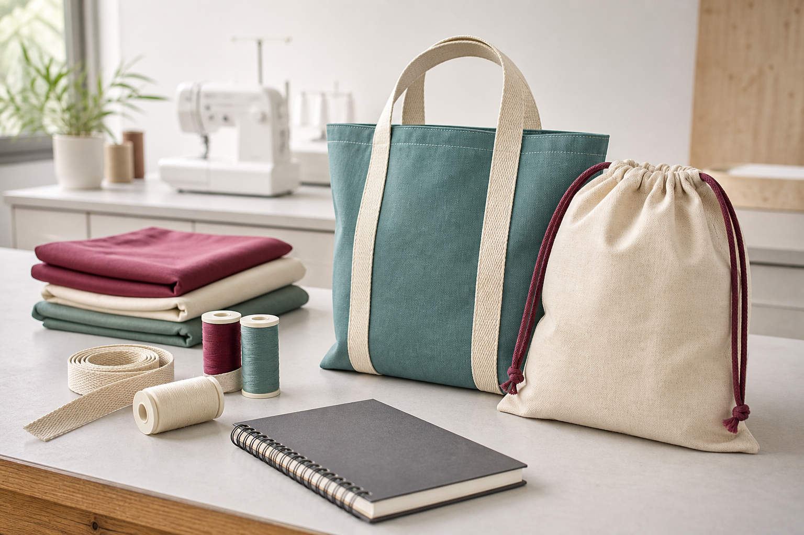
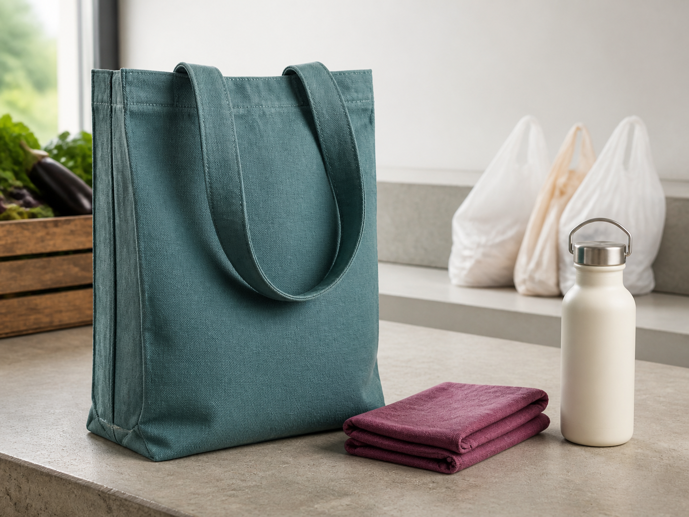

1. Learn
Read each named theory section and use its purpose-built visual and learning pathway.
Technology 7–8 · Materials focus · Textiles
Investigate textiles, build safe practical skills and develop a reusable personal carry item that responds to an environmental problem.

How the course works
Read each named theory section and use its purpose-built visual and learning pathway.
Open the section drawer, answer ten checks and use the feedback to improve.
Complete the higher-order response and connect the idea to an Awesome Bag decision.
Use the module checklist and keep important project evidence in My folio.
Ten-module pathway
Checking progress saved on this device…
Resume at the first incomplete sectionModule 1
Students connect textile properties and structures to everyday uses, then unpack the environmental design challenge for the Awesome Bag.
Three section packages
Open Module 1Module 2
Students learn to recognise hazards, use common hand and heat tools responsibly, and justify tool choices through task, material, quality and safety evidence.
Three section packages
Open Module 2Module 3
Students connect common sewing-machine parts to functions, understand the purpose of top-thread and bobbin setup, and rehearse controlled, safe operation without assuming one machine model.
Three section packages
Open Module 3Module 4
Students distinguish straight and zigzag stitch functions, build an accurate reinforced 1.5 cm project seam, and use comparable samples to evaluate stitch quality before production.
Three section packages
Open Module 4Module 5
Compare fabric-decoration methods, plan an appliqué sample and use fair testing to improve stencilled or printed results before decorating the bag.
Three section packages
Open Module 5Module 6
Examine textile and plastic impacts across a life cycle, learn respectful responsibilities around Country and ICIP, and design a reusable carry item that communicates environmental intent honestly.
Three section packages
Open Module 6Module 7
Turn the design brief into draft criteria, investigate and annotate three genuinely different ideas, then use specific peer feedback to communicate and justify a final direction.
Three section packages
Open Module 7Module 8
Turn a developed bag idea into a practical, checkable plan for materials, processes, equipment and quality.
Three section packages
Open Module 8Module 9
Follow the approved tote or drawstring production pathway with controlled processes, staged checks and recorded decisions.
Three section packages
Open Module 9Module 10
Test the completed design against meaningful criteria and assemble honest evidence of product, process, safety and learning.
Three section packages
Open Module 10
Your design challenge
Develop a personal carry item that is functional, durable, comfortable to use and visually distinctive while considering environmental and ethical impacts.
Explore responsible designEvidence grows as you work
My folio keeps your design choices, practical checkpoints and evaluation evidence in this browser. It does not pretend to submit work to Classroom.